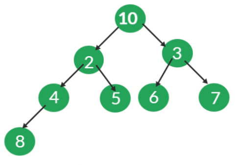

Neste trabalho, o objetivo é criar um sistema que possibilite a funcionalidade de autocompletar e oferecer sugestões de palavras aos usuários. Para atingir essa finalidade, adotaremos a estrutura da árvore binária como base.
Para esclarecer as resouções diante do problema dado, sera discorrido as discussões neste arquivo com base nestas perguntas: *
Primeiramente para começar a extrair os dados dos vários arquivos de entrada foi utilizado um contador para contar dentro do loop onde esta ocorrendo o caminhamento letra a letra do arquivo de entrada para que fosse possível concatenar as palavras e formar o nome de cada arquivo, a lógica é converter o inteiro em string e concatenar com o resto do nome que será padrão para a qualquer arquivo que entre no dataset como arquivo de entrada,o padrão de nomeação destes arquivos são: txt01, txt02, e assim sucessivamente, observe que foram definidos apenas dois textos de entrada, para adicionar mais textos a serem processados basta alterar no arquivo Analysis o desvio condicional onde se chama o métod getText dentro do loop while(*ch).
if(counter < 3){
mp.mp.clear();
ch = getText(loc,counter);
}
Era necessário extrair os dados e coloca-los na memória para serem processados e adicionados a estrutura de dados conhecida como tabela de dispersão ou Hash. Para tal requisito foi utilizado o modo de leitura das linguagens utilizadas neste projeto(C e C++) com a biblioteca fstream e como modo de leitura foi utilizado a função wifstream no modo binário, tal função requer apenas o endereço do arquivo a ser lido e o modo de leitura. assim foi adicionado a uma variavela qual foi denominada de buffer neste projeto, e posteriormente seu valor foi retornado a outra que se encontrava no trecho do código onde ocorreu a análise dos dados do arquivo, cujo nome é Analysis, tal função é chamada na função principal da aplicação, que é o marco de inicio de todos os procedimento para cumprir com o objetivo principal do projeto o de fazer um analisador de recorrência de palavras em um texto.
Tendo os dados a dispozição para processamento na memoria foi necessário decidir qual estrutura de dados utilizar para armazenar os dados, e alem disso como identificar onde o buffer se encontrava a medida que fosse percorrido letra a letra do arquivo de entrada. Para armazenar as palavras do arquivo de entrada foi utilizado a tabela de dispersão hash, pois a mesma usa como indereçamento uma chave o que facilita a pesquisa, cujo custo computacional é O(1), assim a medida que ocorreu a repetição das palavras no texto foi facil localizar tal palavra na estrutura de dados e contar sua frequencia o qual se faz o principal objetivo.
Imagine se fosse usado em vez da hash uma lista para armazenar as palavras, todas as vezes que uma palavra fosse ser inserida a lista teria de ser percorrida novamente para averiguar se essa palavra já não foi inserida. O que não ocorre na estrutura hash, como a pesquisa tem custo O(1).
Para realizar o armazenamento de um dado a biblioteca unordered_map recebe um valor e o converte em um inteiro que se torna chave para aquela string ou o tipo que for passado para ser armazenado e envia a uma função que realiza operações para gerar uma chave única do tamanho de 32 ou 128 bits, essa função hash se chama MurmurHash, foi criada por Austin Appleby em 2008, ela inicialmente pega valores aleatórios e atribui a algumas variaveis do tipo inteiro, então a função entra em um loop que pega partes de 4 bytes, ou seja, se a chave representar algo maior que 32 bits ele vai repartir essa chave e trabalhar com partes de 32 bits por vez, essa parte retirada da chave vai ser utilizada a cada interação para realizar duas operações de multiplicação e uma operação lógica entre os bits do valor, que nesse caso é a operação de ROL, que se trata de uma operação bit a bit que desloca os bits de um valor para a esquerda e “roda” o bit mais significativo (o bit mais à esquerda) para a posição menos significativa (o bit mais à direita). Basicamente, é como mover os bits para a esquerda e fazer com que o bit que “cai” pela esquerda apareça novamente na direita.
O pseudocódigo a seguir mostra a função:
algorithm Murmur3_32 is
// Note: In this version, all arithmetic is performed with unsigned 32-bit integers.
// In the case of overflow, the result is reduced modulo 232.
input: key, len, seed
c1 ← 0xcc9e2d51
c2 ← 0x1b873593
r1 ← 15
r2 ← 13
m ← 5
n ← 0xe6546b64
hash ← seed
for each fourByteChunk of key do
k ← fourByteChunk
k ← k × c1
k ← k ROL r1
k ← k × c2
hash ← hash XOR k
hash ← hash ROL r2
hash ← (hash × m) + n
with any remainingBytesInKey do
remainingBytes ← SwapToLittleEndian(remainingBytesInKey)
// Note: Endian swapping is only necessary on big-endian machines.
// The purpose is to place the meaningful digits towards the low end of the value,
// so that these digits have the greatest potential to affect the low range digits
// in the subsequent multiplication. Consider that locating the meaningful digits
// in the high range would produce a greater effect upon the high digits of the
// multiplication, and notably, that such high digits are likely to be discarded
// by the modulo arithmetic under overflow. We don't want that.
remainingBytes ← remainingBytes × c1
remainingBytes ← remainingBytes ROL r1
remainingBytes ← remainingBytes × c2
hash ← hash XOR remainingBytes
hash ← hash XOR len
hash ← hash XOR (hash >> 16)
hash ← hash × 0x85ebca6b
hash ← hash XOR (hash >> 13)
hash ← hash × 0xc2b2ae35
hash ← hash XOR (hash >> 16)
No que se refere ao tratamento de colisões o unordered_map faz o seguinte: Se uma chave equivalente a k já existir no contêiner, atribui std:: forward < M > ( obj ) ao mapped_type correspondente à tecla k. Se a chave não existir, insere o novo valor como se fosse por insert, construindo-o a partirvalue_type ( k, std:: forward < M > ( obj ) ).
Quanto ao tamanho do hash quando criado a estrutura se tem acesso diretamente a essa informação apartir da versão do C++11, este tamanho depende das politicas da biblioteca utilizada, no caso do unordered_map esse tamanho é de apenas um compartimento ou bucket, que pode ser comprovado através desse algoritmo:
#include< iostream >
#include< unordered_map >
int main() {
std::unordered_map myMap;
// Get the number of the buckets
size_t numBuckets = myMap.bucket_count();
std::cout << "Number of buckets: " << numBuckets << std::endl;
return 0;
}
Para realizar a identificação de onde o buffer se encontrava foi utilizado as seguintes considerações:
Assim quando foi identificado que a variavel com os dados do texto de entrada estava em alguma destas situações a palavra já estava em uma outra variável que foi sendo concatenada letra a letra a cada vez que o loop de leitura foi ocorrendo. A motivação do uso da linguagem C++ neste projeto também se faz mais significativa neste momomento da discução visto que a concatenação de uma string na mesma é mais simples que na linguagem C.
A cada vez que isso ocorria foi sendo adicionado a palavra a estrutura e assim foi até o fim do texto, após o término do processamento do texto por completo a tabela de dispersão continha as k palavras mais recorrentes, nesse caso k = 20, se desejar conhecer um número distinto de palvras mais recorrentes basta alterar porem com isso surge outro entrave, como saber em meio a milhares de palavras quais são as mais recorrentes?, a resposta é: basta usar uma árvore de prioridade heap de tamanho k, fazendo um heap min e percorrendo a hash buscando os valores mais recorrentes, a medida que se percorre a tabela de dispersão do primeiro elemento ao último se compara com o primeiro elemento, que após ter executado o heap min teremos o menor valor no nó raiz. Assim encontrar o elemento que deve sair da árvore foi simples.
O Heap funciona da seguinte forma: inicialmente se reparte o vetor em duas partes e com isso se pega o indice do elemento que esta no meio do vetor, se usa esse elemento para iniciar o procedimento de realização do hepfy, assim elemento por elemento do meio do vetor ao primeiro se analisa as casas que são resultado das expressões 2 * posição atual sendo analisada = filho a esquerda, e 2 * posição atual sendo analisada + 1 = filho direito, se acaso os filhos forem menores que o nó pai se faz a troca, e ao fim da análise tem se na primeira posição ou raiz da árvore o menor elemento.
